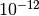
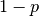
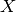
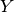
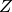
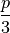

Wraps a list of tuples corresponding to a discrete probability and an operator. This assumes independent identically-distributed noise, though not necessarily Pauli.
| Parameters: | prob_op_list (list) – A list of probabilites and associated operators. The probabilites are floats which must sum to 1 to within . The operators are represented by strings which must be drawn from the list of acceptable operators [‘I’,’X’,’Y’,’Z’,’H’,’P’] Each pair (a probability and its associated operator) is stored in a tuple. |
|---|
The depolarizing model applies the identity with probability , and each of the single qubit Pauli operators , , and  with probability .
The independent identically-distributed X/Z model applies a bit and phase flip to each site, resulting in a reduced probability of Y errors